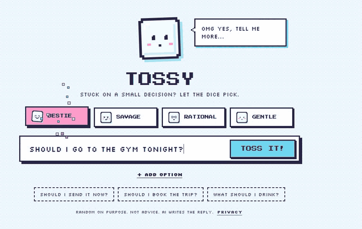
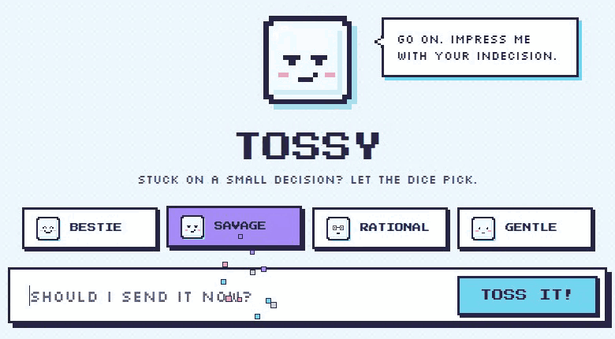
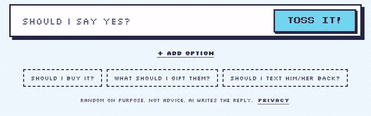
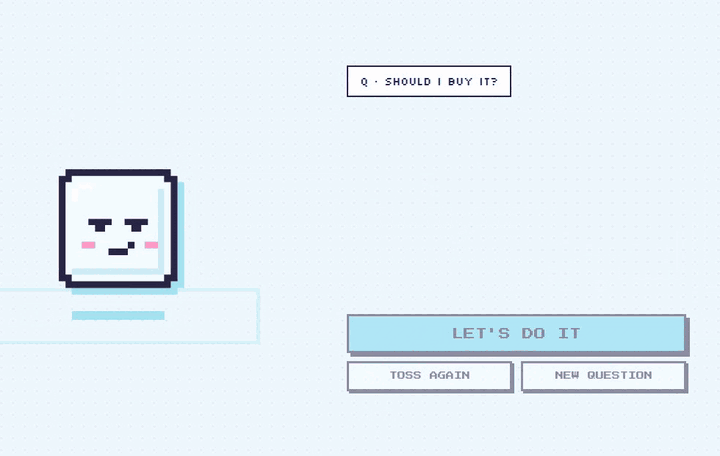
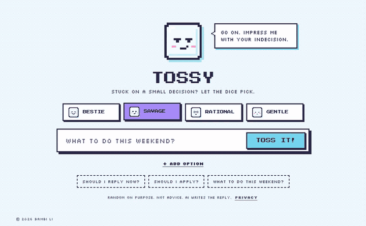
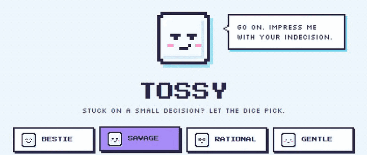
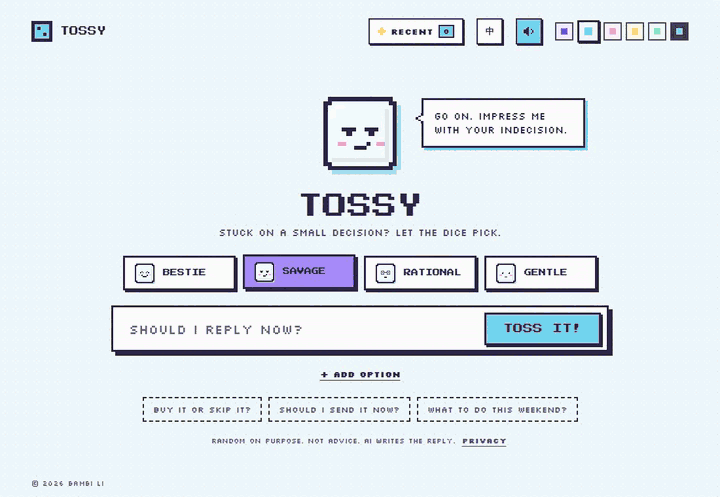
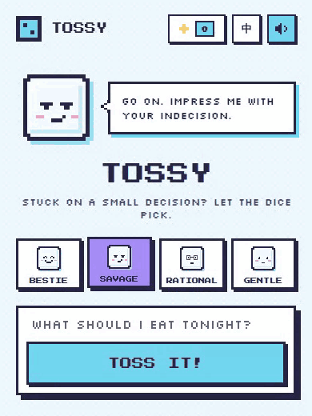

PICK A MODE, THEN TOSS.
A playful decision tool that uses randomness to help people stop over-thinking small choices.
PICK A MODE, THEN TOSS.
What to eat. Which shirt. Whether to text back now or later. None of these matter much, yet they can eat twenty minutes and a surprising amount of energy.
I kept noticing the same pattern in myself and people around me: the options are usually close enough that either would be fine. The hard part isn't choosing well. It's stopping.
Most decision tools answer this with more analysis: pros and cons, scores, recommendations. For a choice this small, more thinking is the problem, not the fix.
The options were never the problem. Stopping was.
For small choices, a good-enough answer delivered instantly beats a perfect answer that takes effort. So Tossy doesn't try to make better choices. It helps people stop over-thinking the ones that don't matter.
That meant saying no to the obvious features:
Don't make users structure their indecision before helping them escape it.
Tossy started as a mystical, tarot-like oracle. But fortune-telling implies the answer means something. As the product moved toward playful, low-stakes decisions, the visual language became lighter, friendlier and deliberately less authoritative.
If the answer is random, the moment has to feel like something. The whole product lives in about three seconds, so the toss gets the most care.
The core loop is Question → Toss → Reveal. As you type, the dice glows and "listens." When you toss, it plays out in six beats. The pause before the answer is intentional: anticipation makes a random result feel like a moment rather than a lookup.
Yes/no questions get an answer in the question's own words: "Invest" or "Hold off," not a generic YES/NO. Open questions get one concrete answer. Options are optional: up to five, added one at a time. Tapping an "X or Y" starter question splits it into two options automatically, which quietly teaches new users that options exist.
Waiting is part of the toss. The AI behind the answer usually takes 1–2 seconds. Instead of a spinner, the dice hangs in the air for up to about 6 seconds, so latency becomes suspense. The whole flow fits on one screen, on phone and desktop, so the toss never scrolls out of view.
Anticipation turns a random result into a moment.

THE ODDS LANDED ON NO. NOTHING PERSONAL.
TRUST ME ON THIS ONE.


The first version had one button after the reveal: Toss Again. But people don't react to a random answer in just one way. Some accept it, some want a redo, some realize the dice got it wrong.
So the reveal became a fork: Let's do it, Secretly hoping for [the other side]?, Toss again and New question. Each one tells Tossy, and the user, something different.
If someone immediately wishes the dice had landed on the other option, the random result has already done its job: it revealed a preference. Re-tossing works the same way. By the third toss, Tossy's character calls it out and nudges "Secretly hoping for…?" forward.
The most interesting reaction wasn't acceptance. It was disappointment.
Should I buy it?
Accepts the result. The dice did its job and the decision is over. The primary action; re-tossing is visually demoted.
Disappointment reveals a preference the user already had. Yes/no and option questions only: open questions have no "other one", so they just re-toss.
Repeated re-tossing is a signal too. On the 3rd toss the character reacts, and "Secretly hoping for…?" steps forward.
Starts a different decision.
Babe. Toss #3. You want the other one.
BestieThird time? You just don't like the answer.
Savage3 tosses. Your preference is showing.
RationalStill tossing? Maybe you already know.
GentleThis one is not worth your energy.
One way out: toss again. Every reaction looked the same.
This one is not worth your energy.
Secretly hoping for buy it?Four ways out, and each one tells Tossy something.
Screens recreated for this page.

It would have been easy to let AI pick the answer. It would also have broken the product: the moment AI decides, the answer sounds smart, and smart answers invite second-guessing. So AI has a clear, limited job.
Answers were random locally, so testers often got answers that didn't fit the question at all.
Six relevant answers; the dice picks one.
It worked, but every new kind of question needed a new rule. Not sustainable.
It classifies the question and writes both sides. The local rules became the fallback.
A real place, a real gift, a real dish. No dodges and no jokes in place of an answer.
A "Hold off" never comes with a line encouraging you to go for it.
"Am I fat?" gets no verdict.
Every AI feature has a local fallback, so a timeout never leaves the user stuck.
AI adds possibility. Randomness keeps authority.
Your bank account is crying just looking at this.
Secretly hoping for invest?Let us pause and breathe a bit first babe.
Secretly hoping for go for it?Current volatility exceeds your risk tolerance.
Secretly hoping for go ahead?There is no need to rush into anything.
Secretly hoping for invest?Same question, one toss per mode. The AI words both sides in each mode's own voice and writes a matching comment; the dice picks the side. Each card offers the other side right away.

If the answer is random, personality is what makes Tossy worth coming back to. Every detail follows the same rule: make a low-stakes moment feel light and a little fun.

Bestie, savage, rational, gentle. Same dice, different voice.

Pick a palette before you toss.
A tiny sound for a tiny decision. Mutable.
On phones, you feel the dice land.

Pull down and the dice spins. Built because Safari's bounce area broke the polka-dot background.
THE DICE HAS DECIDED 12 THINGS FOR YOU.
"The dice has decided N things for you."
DON'T ARGUE WITH THE DICE.
≠STOP STARING. GO.
The same comment never shows up twice in a row.
宝，第三次了。你其实想要另一个吧。
Pixel font and copy for Chinese-speaking users.
Small rewards for people who poke around.
Savage mode started as a list of things the AI must never say. In testing, friends still got lines that felt mean. So I stopped writing rules and wrote a character instead: the old friend who talks tough but has your back. It roasts the situation, the indecision and the dice. Never the person.
The user is the hero of the joke, not the punchline.
Never insult the user · never mention weight · never swear · never …
Q · Should I text him back?
Technically allowed. Still aimed at the person.
The old friend who talks tough but has your back. Roast the situation, the indecision, the dice. Never the person.
Q · Should I text him back?
Same edge, pointed at the moment instead.
Illustrative lines written for this page, not logged outputs.
I shared Tossy with friends, who passed it on to their friends. Each round, I fixed what broke. A few patterns shaped the product most.
Several testers tapped the dice without entering a question, expecting it to just answer. So I made an empty toss work. It pushed the product principle further than I had: don't even make users write the question down first.
A friend asked what to eat while drinking with friends tonight. Tossy said sparkling water. She tossed again: iced Americano. "Why is everything a drink?" A random answer is fine; an irrelevant one breaks trust. This pushed AI from writing comments to reading the question first (→ Section 06). Part of the problem, it turned out, was a bug (Finding 5).
"Why is everything a drink?"
2b · Too few words. Another note from the same friend: the replies felt a bit short. I kept them short on purpose: Tossy exists to save mental effort, and a longer reply is one more thing to read. Instead I made them fresher, with far more variety and more creative lines, so the same comment doesn't keep coming back.
Side note. Her first question was "Which AI is this, ChatGPT?" People noticed the AI right away, which is exactly why it matters that the AI never decides.
Perfect with a cold drink, babe.
The AI reads the question first, so all six candidates are things you'd eat with drinks. The dice still picks one.
Chat recreated and translated from the original. The "now" answer is an example.
Some savage-mode lines landed as mean, not funny. Each round I patched the banned list, and each round something new slipped through. That's what led to rewriting savage mode as a character instead of a rulebook (→ Section 07).
Of 52 recorded decisions, 13 ended with the user switching to the side the dice didn't pick. On yes/no questions it was 10 of 24 (42%). The dice didn't make those choices; it surfaced ones people already had.
Accepted the dice Switched to the other one
The busiest testing day was also the day AI quietly stopped working: the production API key was missing. Because every AI feature had a local fallback, nobody saw an error. Answers just got blander and sometimes off-topic. Some of the "wrong" answers friends reported weren't AI mistakes at all. A fallback that hides failures needs monitoring that doesn't.
| Visitors who tossed | 17 (25%) |
|---|---|
| Decisions recorded | 52 · 39 accepted, 13 switched |
| Switched on options | 3 of 16 (19%) |
| Started from a starter question | 61 of 145 (42%) |
| Results shared | 11 |
Early testing, small sample. These are signals, not proof.
How it was counted. Internal and test users are filtered out, including my own test sessions. Most visitors were friends opening a shared link without a decision in mind, so "visitors who tossed" isn't a real conversion rate.
Privacy. Analytics track events, never the questions people ask. The API key stays server-side.
Reliability. Successful AI calls return in about 1.3–1.5 seconds (median). After the API key was restored, a 4.2-second limit still let some calls time out, so I raised the wait to about 6 seconds, with the dice hovering in the air. From Oct 10 to Nov 8, 8 of 9 AI calls succeeded (median 1.4 s); the one miss fell back to local answers.
I started with one hypothesis: randomness helps people decide. Testing added a second: randomness also helps people notice what they already prefer. Sometimes the most useful answer is the one you're disappointed by.
I built Tossy to make decisions for people. It turned out to be better at showing them what they'd already decided.
I didn't write the code. I built Tossy with Claude and Codex, and my job was the part AI can't decide for you: the principle (the dice decides, AI only speaks), what a good answer looks like, how each mode should behave, and when a version was ready to ship.
I connected the Gemini API and PostHog myself, tested each build with friends, and turned what broke into the next round of requirements. When a fix stopped working, like adding more banned words to savage mode, I changed the brief instead of the patch: I gave the AI a character to play.
AI wrote the code. I decided what it should do.
Goal. Savage should feel like teasing from a friend, not an attack.
Character. The old friend who talks tough but has your back.
Target. Roast the situation, the indecision and the dice. Never the person. The user is the hero of the joke, not the punchline.
How. Show what good lines look like instead of listing what's banned. Keep the word filter only as a last safety net.
Keep. The UI name stays "Savage". The answer itself stays random; tone only changes the comment.
The dice has landed
Toss your own →